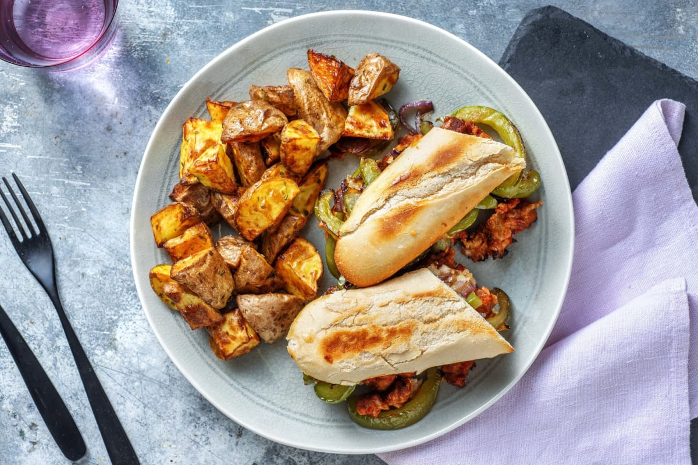

Sausage and Pepper Hoagies

Description
This ballpark classic is perfect for baseball season! All the components are cooked in the same pan for maximum flavour, leaving you with almost no clean-up so you’ll be able to sit back and enjoy the game.
Ingredients
- 250g mild italian sausage
- 360g yellow potato
- 1 tbsp garlic puree
- 3/4 cup shredded mozzarella cheese
- 2 artisan bread loaves
- 200g green bell pepper
- 113g slied onion
- 1/2 cup marinara sauce
- 1 tbsp italian seasoning
- 2 tbsp cooking oil
- salt and pepper, to taste
Steps
- Before starting, preheat the oven to 450°F. Wash and dry all produce.
- Cut potatoes into 1-inch pieces. Add potatoes, half the Italian Seasoning and 1 tbsp oil (dbl for 4 ppl) to a baking sheet. Season with salt and pepper, then toss to coat. Roast in the middle of the oven, until golden-brown, 22-24 min.
- While the potatoes roast, core, then cut the peppers into 1/4-inch strips. Heat a large non-stick pan over medium-high heat. When hot, add 1 tbsp oil (dbl for 4 ppl), then the onions and peppers. Cook, stirring often, until tender-crisp, 4-5 min. Season with salt and pepper. Transfer to a plate and cover to keep warm.
- Heat the same pan over medium-high heat. When hot, add1/2 tbsp oil (dbl for 4 ppl), then sausage. Cook, breaking up sausage into smaller pieces, until no pink remains, 3-5 min.**
- Add remaining Italian Seasoning and garlic puree to the pan with sausage. Cook until fragrant, 1-2 min. Add the marinara, 1/4 cup water and 1/4 tsp sugar (dbl both for 4 ppl). Reduce the heat to medium-low. Cook, until sauce coats the sausage, 1-2 min.
- Halve the rolls. Arrange on a foil-lined baking sheet, cut-side up. Divide the sausage filling over half the rolls, then top remaining halves with the pepper mixture. Sprinkle with cheese. Toast in the top of the oven, until rolls are lightly golden and cheese has melted, 3-4 min. (TIP: Keep an eye on the rolls so they don't burn!) Sandwich sausage and pepper topped halves together.
- Divide hoagies and roasted potatoes between plates. Serve.
Reference:
Sausage and Pepper Hoagies